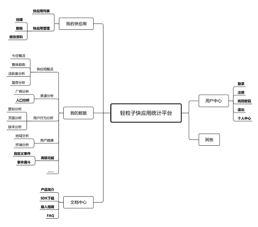

轻粒子快应用统计平台简介

轻粒子快应用数据统计分析平台是为快应用专门打造的一款数据统计分析产品，除提供日常基础数据统计服务以外，包括：日常uv、pv、留存、活跃度、用户画像、自定义事件、事件漏斗等；同时还基于快应用标准专门开发了许多特色功能，如桌面icon（图标）创建情况分析、手机厂商流量分析、入口来源流量分析（正在开发中）等，后续还将提供更多特色功能，敬请期待；最后针对视觉风格与交互体验也做了精心的设计，分类更加清晰，视觉更加扁平化，以蓝白为主色彩彰显青春活力，相信以上优化将会给您带来全新的感受和不一样的体验！！！
“轻粒子快应用统计平台—专注于快应用数据统计分析”